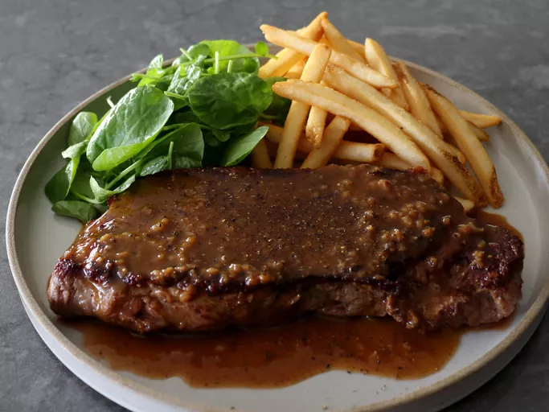

Home
Steak

Description:
Chef John's steak frites recipe features a pan-seared and pan-sauced steak,
just like you'd get at a French bistro. If you always grill steak,
this will be a game-changer. This method delivers a perfectly prepared,
perfectly seasoned steak, and can be used with many different cuts beyond
New York strip.
Ingredients:
- 14-oz New York strip steak
- Kosher salt
- Black pepper
- Clarified butter
- Shallots
- White wine
- Beef bone broth
Steps:
- Trim the steak.
- Refrigerate uncovered for 2-10 hours.
- Bring the steak out and sit it at room temperature for 15 minutes.
- Preheat a steel pan on high heat.
- Cook for two minutes on one side, three on the other.
- Add butter and sauce, and serve hot.